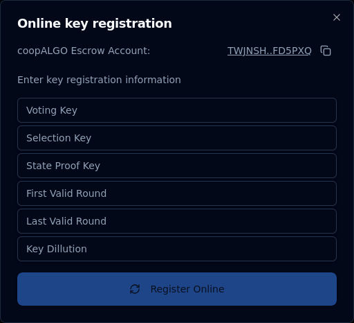

Running a dualSTAKE node
dualSTAKE contracts currently operate with a single escrow account. A node runner is appointed to participate on behalf of dualSTAKE by the ASA leadership or Myth Finance.
ASA communities are expected to operate their nodes and reap the additional rewards:
Node runners accrue fees from rewards, in ALGO. Fees can withdrawn at any time. The default node runner fee is 4%, though this can be configured under the protocol safeguards.
The node runner account can:
- change the participation keys of the contract, as well as the online/offline state.
- change the node runner account to another address
- withdraw accrued node runner fees
The "fee admin" role held by Myth Finance can also perform these actions.
How to run a dualSTAKE node
This section will walk you through (1) Generating participation keys, (2) registering them through the website, and (3) setting up Allo Alerts monitoring.
When you connect the node runner account and visit your dualSTAKE token page, you will see the Manage Node panel:
Note: you need to be allocated the node runner role by the Myth Finance team before you can perform these tasks.

1. Generate participation keys
First, you need to create participation keys for the dualSTAKE escrow account on your node.
Copy the address using the Copy button next to the xyzALGO escrow address (e.g. TWJN.. above).
Create participation keys for this account on your node.
Recommended duration: at least 3,000,000 rounds (approximately 90 days.)
2. Register the keys
In the Manage Node panel, click MANAGE, then Key Registration, then Online. You will see a form like the one shown below.
Copy the participation key information from your node carefully and double-check the values. Note: The "Voting key" field may be called "Vote key" on your node.
Click Register Online and sign the transaction.
Note: The first time you register a dualSTAKE account online will require a 2 ALGO fee for protocol rewards eligibility.

That is all: your node should now be participating on behalf of the dualSTAKE escrow account.
Note: The consensus online status on the dualSTAKE pages will take up to 15 minutes to update. Do not be concerned if it does not update to ONLINE immediately.
3. Monitor your node
We strongly recommend setting up an Allo Alerts account. This free service provided by Nodely will notify you of important node events, like degraded voting performance, upcoming key expiration, etc.
- Create a free account on alerts.allo.info using your email address.
- Navigate to
Monitoring->Add new - Enter the dualSTAKE escrow address that you generated participation keys for
- Label it with the dualSTAKE name, e.g.
coopALGOand clickSAVE - Click
Add Triggerand add theVoting Performancetrigger - Click
Add Triggerand add theKey Expirationtrigger - Click
Add Triggerand add theOnline/Offline Statustrigger
You should now receive notifications via email when any of these alarms are triggered.
Renew participation keys
Your participation keys will eventually expire. If you have set up Allo alerts (see above), you will be notified about this event about a week before it takes place.
To renew your participation keys, follow the key registration procedure above: generate new participation keys and register them online.
Claim your node runner rewards
In the Manage Node panel, you can click the CLAIM button to withdraw your accrued node runner fees.
Transfer the node runner role
If you want to transfer the node runner role to another account, you can do so through the Manage Node panel.
Click Manage, then Transfer Noderunner Role and fill in the address you want to set as the node runner.
Note: before you can transfer the node runner role, you need to withdraw any accrued node runner fees.